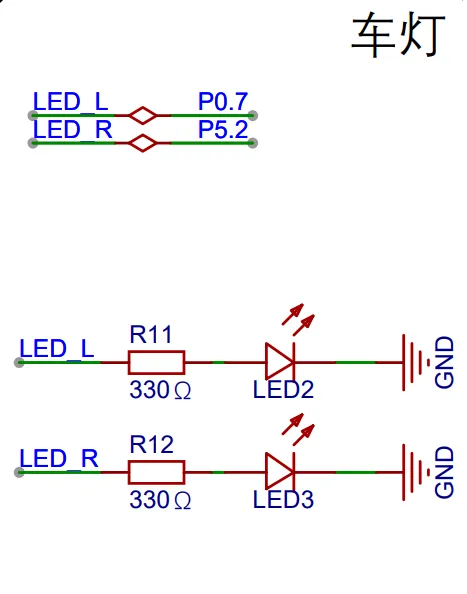
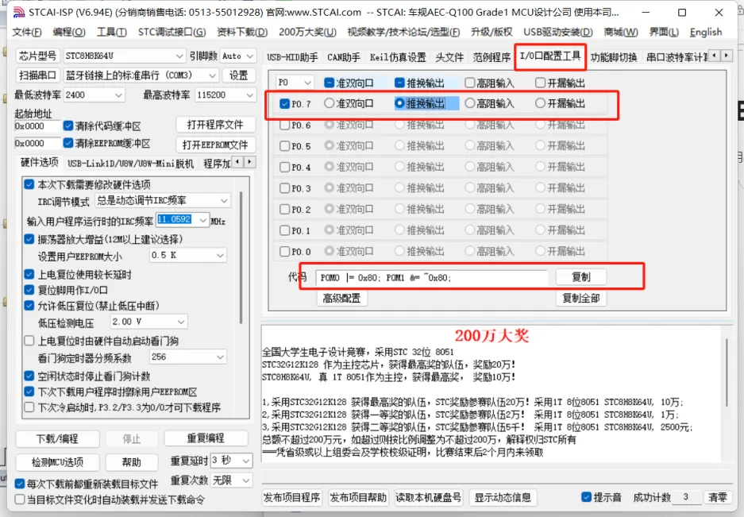

<!DOCTYPE lake>
<p data-lake-id="u38aa2118" id="u38aa2118"><strong><span class="lake-fontsize-14" data-lake-id="uaeb4f77e" id="uaeb4f77e" style="color: var(--yq-text-primary)">原理图</span></strong><span class="lake-fontsize-14" data-lake-id="u1425948e" id="u1425948e" style="color: var(--yq-text-primary)"><br/></span><span class="lake-fontsize-11" data-lake-id="u97626cd9" id="u97626cd9" style="color: var(--yq-text-primary)">左车灯和右车灯的引脚分别是P07，P52</span><span class="lake-fontsize-11" data-lake-id="uf36832e3" id="uf36832e3" style="color: var(--yq-text-primary)"><br/><br/></span></p><p data-lake-id="u9bd46841" id="u9bd46841"></p><p data-lake-id="ue470c182" id="ue470c182"><span class="lake-fontsize-11" data-lake-id="u1be986f7" id="u1be986f7" style="color: var(--yq-text-primary)"><br/></span><span class="lake-fontsize-11" data-lake-id="u84af1d99" id="u84af1d99" style="color: var(--yq-text-primary)">330欧的电阻作用以保证LED流过的电流不要超过LED最大工作电流</span><span class="lake-fontsize-11" data-lake-id="ue5fd9aab" id="ue5fd9aab" style="color: var(--yq-text-primary)"><br/></span><strong><span class="lake-fontsize-14" data-lake-id="u40a50c2e" id="u40a50c2e" style="color: var(--yq-text-primary)">功能实现</span></strong><span class="lake-fontsize-14" data-lake-id="ufc856e6e" id="ufc856e6e" style="color: var(--yq-text-primary)"><br/></span><strong><span class="lake-fontsize-12" data-lake-id="u2a4e71fc" id="u2a4e71fc" style="color: var(--yq-text-primary)">点亮左右车灯</span></strong><span class="lake-fontsize-12" data-lake-id="u4a882af5" id="u4a882af5" style="color: var(--yq-text-primary)"><br/></span><strong><span class="lake-fontsize-11" data-lake-id="u444b8050" id="u444b8050" style="color: var(--yq-text-primary)">几种GPIO模式</span></strong><span class="lake-fontsize-11" data-lake-id="ufedf18b2" id="ufedf18b2" style="color: var(--yq-text-primary)"><br/></span><span class="lake-fontsize-11" data-lake-id="u610c3b78" id="u610c3b78" style="color: var(--yq-text-primary)">1</span><span class="lake-fontsize-11" data-lake-id="u09555df6" id="u09555df6" style="color: var(--yq-text-primary)">准双向口，也称为弱上拉模式，可做输入和输出操作，电流小，通常作为信号功能使用</span><span class="lake-fontsize-11" data-lake-id="uf2fba560" id="uf2fba560" style="color: var(--yq-text-primary)"><br/></span><span class="lake-fontsize-11" data-lake-id="u09858bca" id="u09858bca" style="color: var(--yq-text-primary)">2</span><span class="lake-fontsize-11" data-lake-id="ub0cb695d" id="ub0cb695d" style="color: var(--yq-text-primary)">推挽输出，也称为强上拉模式，作为输出操作，电流持续，作为功率输出</span><span class="lake-fontsize-11" data-lake-id="u238f7fec" id="u238f7fec" style="color: var(--yq-text-primary)"><br/></span><span class="lake-fontsize-11" data-lake-id="u269c2bef" id="u269c2bef" style="color: var(--yq-text-primary)">3</span><span class="lake-fontsize-11" data-lake-id="ubecf4570" id="ubecf4570" style="color: var(--yq-text-primary)">开漏输出，可做输入和输出操作，需要外部提供上拉电阻</span><span class="lake-fontsize-11" data-lake-id="u55901385" id="u55901385" style="color: var(--yq-text-primary)"><br/></span><span class="lake-fontsize-11" data-lake-id="u5adc721a" id="u5adc721a" style="color: var(--yq-text-primary)">4</span><span class="lake-fontsize-11" data-lake-id="ude8860fe" id="ude8860fe" style="color: var(--yq-text-primary)">高阻输入，电流无法输入，但是可以外部输入电平会拉高或拉低其位寄存器，用于数模转换</span><span class="lake-fontsize-11" data-lake-id="u795ed36d" id="u795ed36d" style="color: var(--yq-text-primary)"><br/></span><strong><span class="lake-fontsize-14" data-lake-id="u2e28da5a" id="u2e28da5a" style="color: var(--yq-text-primary)">如何实现</span></strong><span class="lake-fontsize-14" data-lake-id="u03327d7a" id="u03327d7a" style="color: var(--yq-text-primary)"><br/></span><span class="lake-fontsize-11" data-lake-id="ueb46f42c" id="ueb46f42c" style="color: var(--yq-text-primary)">使用串口烧录工具进行引脚配置</span><span class="lake-fontsize-11" data-lake-id="ua203094c" id="ua203094c" style="color: var(--yq-text-primary)"><br/><br/></span></p><p data-lake-id="ub6c394e9" id="ub6c394e9"></p><p data-lake-id="u3689db5f" id="u3689db5f"><span class="lake-fontsize-11" data-lake-id="u3db2b99d" id="u3db2b99d" style="color: var(--yq-text-primary)"><br/></span><strong><span class="lake-fontsize-14" data-lake-id="uccadce85" id="uccadce85" style="color: var(--yq-text-primary)">点亮车灯代码</span></strong><span class="lake-fontsize-14" data-lake-id="u4f32666c" id="u4f32666c" style="color: var(--yq-text-primary)">​</span></p><span class="yuque-card-unsupported">[codeblock]</span>